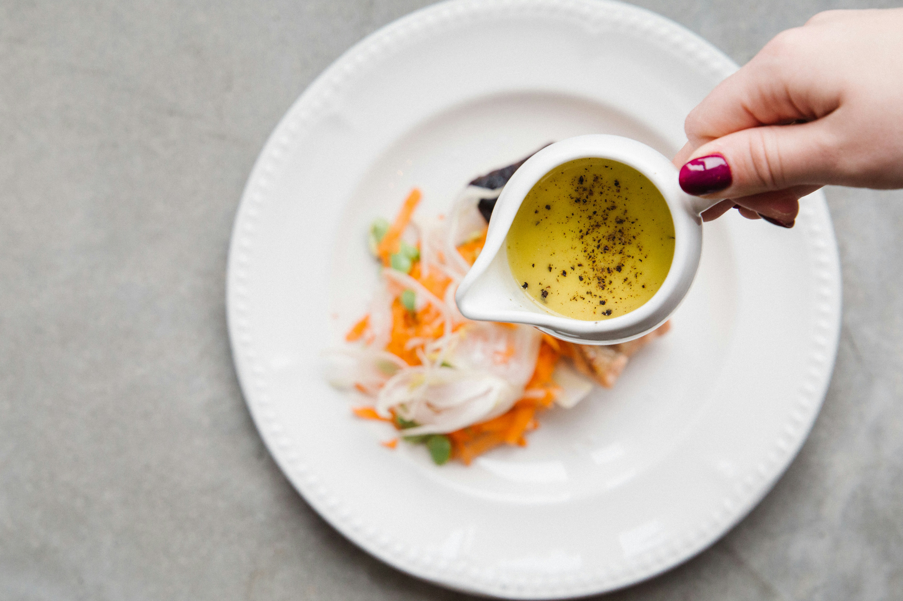

<!DOCTYPE html>
<html lang="en">
    <head>
        <meta charset="UTF-8">
        <meta name="viewport" content="width=device-width, initial-scale=1.0">
        <title>Vinaigrette sauce/title>
    </head>
    <body>
        <h1>Vinaigrette sauce</h1>
        
        <h2>Description</h2>
        <p>
            A vinaigrette sauce is a classic, emulsified dressing made primarily from oil and vinegar, seasoned with salt, pepper, and often other flavorings.
        </p>
        <h2>Ingredients</h2>
        <ul>
            <li>1 small onion, chopped</li>
            <li>½ cup balsamic vinegar</li>
            <li>3 tablespoons honey</li>
            <li>1 tablespoon soy sauce</li>
            <li>1 tablespoon white sugar</li>
            <li>2 cloves garlic, minced</li>
            <li>½ teaspoon crushed red pepper flakes</li>
            <li>⅔ cup extra-virgin olive oil</li>
        </ul>
        <h2>Steps</h2>
        <ol>
            <li>Combine onion, vinegar, honey, soy sauce, sugar, garlic, and pepper flakes in a blender; blend on high, gradually adding olive oil until puréed. Continue blending until thick, about 2 minutes.</li>
        </ol>
        <a href="../index.html">Back to homepage</a>
    </body>
</html>